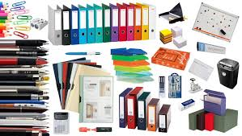

Un producto simple pero altamente noble. La palabra papelería es la que se utiliza normalmente para designar a todos los productos que se realizan en base al papel. Por lo general, la papelería incluye no solamente a este producto, conocido y utilizado en gran cantidad, sino a todos sus derivados: también el cartón y sus diversos tipos, los papeles de alto gramaje, los papeles de seda, los papeles teñidos y coloreados, impresos o estampados.
Todos estos materiales son usados en diferentes espacios, principalmente oficinas y espacios laborales, pero también son parte de un interesante consumo de estos productos en forma de cartas o tarjetas personales, decoración, artesanías, etc..
LE OFRECEMOS:
- HERRAMIENTA PARA ELABORACION DE PROYECTO: Se brinda todo lo relacionado para la elaboración de proyectos.
- UTILIES ESCOLARES: Variante de utiles escolares y poder llevar a tu hijo a vivir la mejor experiencia en su escuela.
- MATERIALES PARA DECORACION DE FIESTAS:Vive la mejor experiencia de tu vida decorando tu cumpleaños y demas con las decoraciones que te ofrecemos.
- MATERIALES PARA TRABAJOS DE ARTE: Expresa tus emociones y sentimientos a lo que amas, te brindamos herramientas y materiales para trabajos de arte.
- MATERIALES MATETICOS: Sé el mejor en lo que haces y vive dedicando tiempo a los numeros, te brindamos herramientas para ello.
- MATERIALES DE OFICINA:Sé el trabajador mas organizado y puntual, podemos cumplir esas metas, te brindamos ayudas con nustras herramientas.